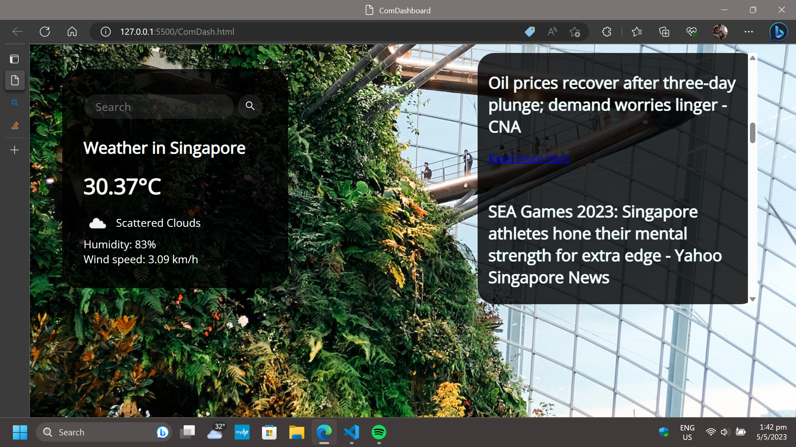
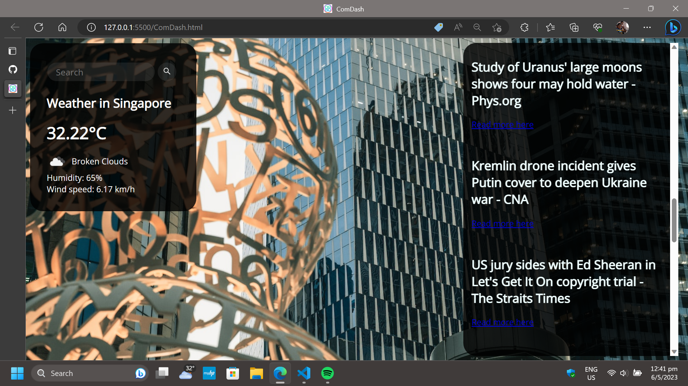
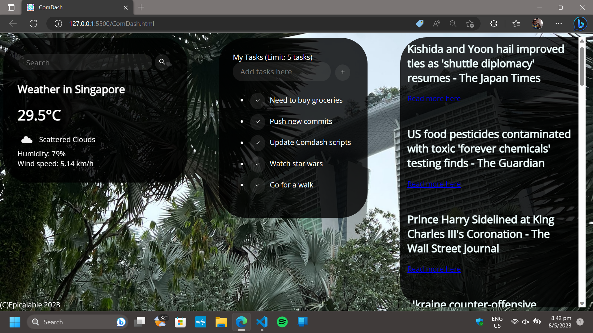
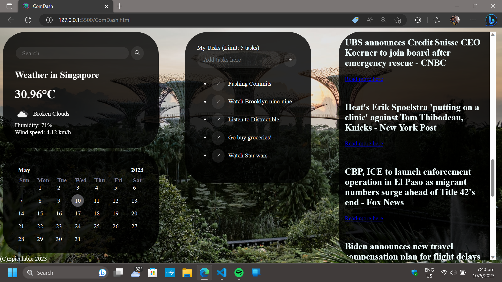
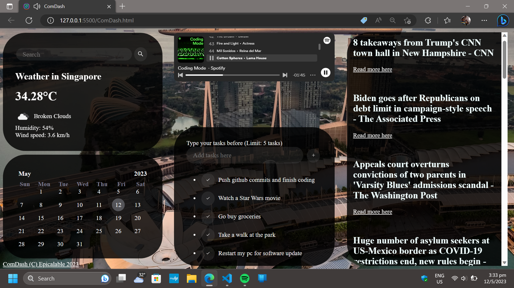
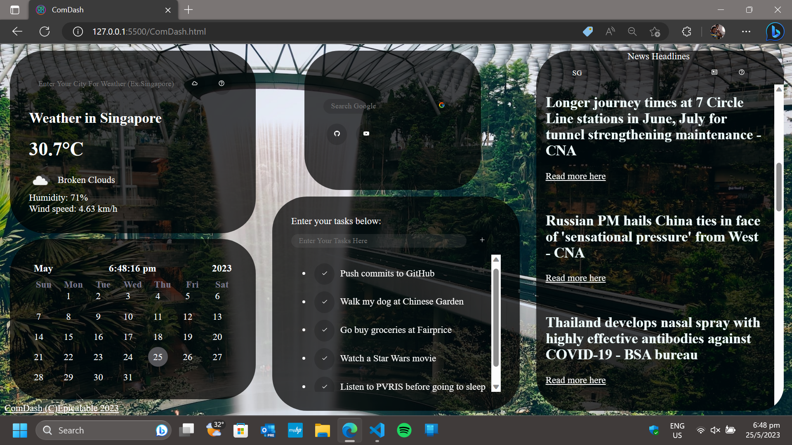
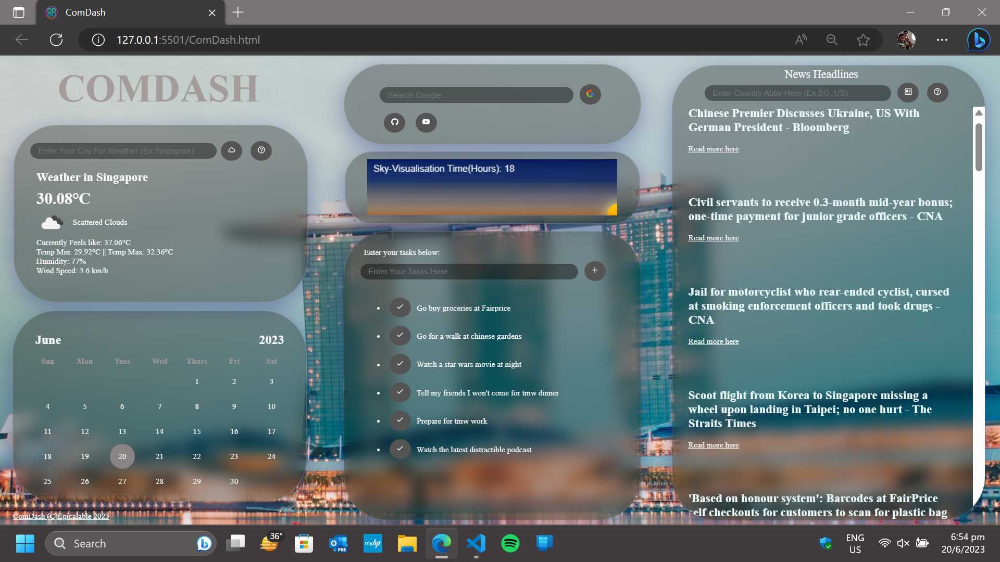
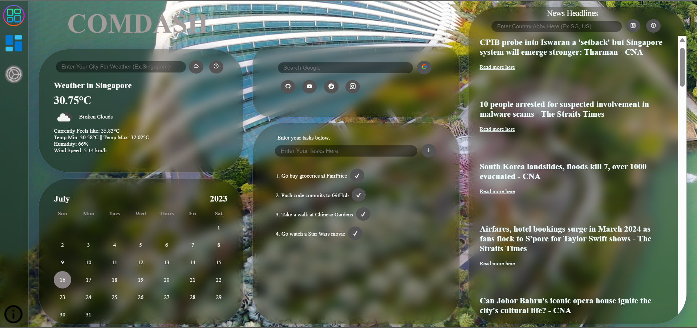

Web-Development
Research And Development Department
Due to diffuculties and problems with our then-project JarDash's design choices, on 14-April-2023 Epicalable
had decided to task R&D Department to help plan a solid UI which could be easily modified and maintainable.
Below is a detailed report which was proposed at that time for consideration as a solution to Epicalable.
The following report was documented along the way and is still being actively being documented.
Introduction:
Epicalable's Admin and Coding Department had problems with the then-JarDash's design with regards to modifying it's
asthethics, User-Interface or during maintainance and troubleshooting.
Below is the envisioned concept-art of
JarDash announced during EpicNote 2022.
What Went Wrong:
We tried our best to think of what best features could be added to the dashboard and went online to search for code
tutorials as we were dealing with a less studied language: JavaScript. So we pulled these codes from different parts of
the internet with a belief that we will understand it and we could customize it afterwards.
But, after going through the code we still couldn't understand how it was built. As Jardash had 4 parts: A date and
time, Weather, Calander and news. We couldn't integrate all the code into 1 file, couldn't standardize the aesthetics
and finally couldn't manipulate it to provide what we want it to produce be it different news or a different background
color.

Aftermath:
With the help of our new understanding of the way to create web-based projects, with the help of the Coding Dept, it took a
total of 3 days to reach Dev phase 1 and honestly, we have never done something like this before and it was
a great experience for everyone working on this project.
So, here are some remarkable features we've added to this project along the way:
Dev Phase 1:
1. Background wallpaper will be shown based on the location of weather asked.
2. Translucent cards are made to display weather and news info.
3. Weather has a search bar to look up for other locations (soon to be extended to news section too).
4. Overall, a great leap in aesthetics compared to our previous iteration.

Dev Phase 1a:
1. Extended the news section till the bottom.
2. Re-positioned all the card elements.
3. Added A new icon for our app (We've made it colorful).

Dev Phase 2:
1. Integrated a new tasks div.
2. (C) Epicalable text at the bottom of the website.

Dev Phase 3:
1. A new Calander card had been added.
2. Logo has been updated.

Dev Phase 4:
1. A new Spotify card had been added.

Dev Phase 5a:
1. After adding Spotify and after reopening the same window Spotify would only
play preview of any songs.
2. We decided to settle on a card that brings you to important websites for
programmers to have and a search bar for easy accessibility to the internet.
3. We have also added some new features which helps to give the user more freedom
EX. Choosing which country news users want.
4. More tasks can be added and also added a 'help buttons' for clueless users.

Dev Phase 6:
1. Day progress bar added to know when the day ends.

Dev Phase 6a:
1. ComDash logo on the top has been added.
2. Glassmorphism has been applied for the first time.
3. New Day progress bar added to know when the day ends.

Dev Phase 8 (Quality Rollout):
1. New settings page added for better UX in the sidebar.
2. New links added in the link card.
3. About-us link in the sidebar.

Conclusion:
Looking back at the first few ComDash photos now seems wonky and a bit ugly.
It shows how far we have come and what we have built which makes current iteration make the first few iterations look
bad on comparison.
ComDash is and will always be growing in order to reach our targeted concept-art.
The above report was documented along the way and is still being actively being documented.
Last Revised: 18-Sep-2023